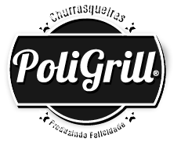

<header class="navbar-fixed">
    <nav class="tom-vermelho-1 roboto" role="navigation" id="navbar">
        <div class="nav-wrapper container">
            <a id="logo-container" href="#" class="brand-logo left">
                
            </a>

            <ul class="right hide-on-med-and-down">
                <li><a href="#" class="tom-cinza-text">Home</a></li>
                <li><a href="#" class="tom-cinza-text">Produtos</a></li>
                <li><a href="#" class="tom-cinza-text">Contato</a></li>
                <li><a href="#" class="tom-cinza-text">Sobre</a></li>
            </ul>
        </div>
    </nav>
    <!-- Sidenav para Mobile -->

    <a href="#" data-target="nav-mobile" class="sidenav-trigger tom-cinza-text hide-on-large-only">
        <i class="material-icons">menu</i>
    </a>
    <ul class="sidenav" id="mobile-demo">
        <li><a href="#">Home</a></li>
        <li><a href="#">Produtos</a></li>
        <li><a href="#">Contato</a></li>
        <li><a href="#">Sobre</a></li>
    </ul>

</header>